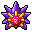

Pokédex / #121

Starmie #121
WaterPsychic
This Pokémon has a geometric body. Because of its body, the locals suspect that it is an alien creature.
Generation 1 · Kanto

Stats
| Attack | 75 | |
|---|---|---|
| Defense | 85 | |
| Sp. Atk | 100 | |
| Sp. Def | 85 |
In the wild
| Wild level | 45–55 |
|---|---|
| HP | 60 |
| Experience | 7 |
| Egg groups | Water 3 |
Evolution
- Evolves from Staryu at level 35, with a Water Stone.
Moves
| Level | Move | Type | Category | Power | Energy | Cooldown | Effect | |
|---|---|---|---|---|---|---|---|---|
| 1 | Tackle | Normal | Physical | 15 | 15 | 1s | Tackle is one of the most common and basic moves a Pokemon learns. It deals damage with no additional effects. | |
| 5 | Water Gun | Water | Special | 40 | 45 | 9s | Water Gun inflicts damage and has no secondary effect. | |
| 10 | Swift | Normal | Special | 60 | 60 | 9s | Swift deals damage and ignores changes to the Accuracy and Evasion stats. | |
| 15 | Bubblebeam | Water | Special | 65 | 70 | 16s | Bubblebeam deals damage and has a 10% chance of lowering the target's Speed by one stage. | |
| 20 | Harden | Normal | Status | – | 70 | 60s | Harden raises the user's Defense by one stage. | |
| 25 | Recover | Normal | Status | – | 90 | 120s | User recovers 50% of its max HP. | |
| 30 | Power Gem | Rock | Special | 80 | 90 | 16s | Power Gem inflicts damage and has no secondary effect. | |
| 40 | Water Pulse | Water | Special | 60 | 65 | 9s | Water Pulse deals damage and has a 20% chance of confusing the target. | |
| 45 | Confusion | Psychic | Special | 50 | 60 | 12s | Confusion deals damage and has a 10% chance of confusing the target. | |
| 50 | Confuse Ray | Ghost | Status | – | 50 | 9s | Confuse Ray causes the target to become confused. | |
| 55 | Psywave | Psychic | Special | – | 100 | 15s | Psywave inflicts a random amount of HP damage, varying by user's level. | |
| 60 | Psychic | Psychic | Special | 90 | 100 | 21s | Psychic deals damage and has a 10% chance of lowering the target's Special Defense by one stage. | |
| 65 | Hydro Pump | Water | Special | 110 | 120 | 27s | Hydro Pump inflicts damage and has no secondary effect. | |
| 70 | Magic Coat | Psychic | Status | – | 100 | 90s | Any move is reflected back to the attacker. |
Field abilities
WaterfallSurfDiveFlash
Special abilities
IlluminateNatural Cure
Egg moves
None
Technical machines
AvalancheBideBlizzardBubblebeamDouble EdgeDouble TeamDream EaterHailHyper BeamIce BeamIcy WindLight ScreenMimicNightmarePsychicPsywaveRageRain DanceReflectRestSkull BashSoftboiledSubstituteSwiftTake DownThunderThunder WaveThunderboltToxicTri AttackWater GunWater PulseZap Cannon
Drops
| Item | Amount | Chance | |
|---|---|---|---|
| water gem | 1–10 | 100% | |
| energy soil | 1 | 46.7% | |
| water pendant | 1 | 43.8% | |
| pot of water | 1 | 28% | |
| ruby | 1 | 28% | |
| starmie doll | 1 | 0.1% | |
| Splash Plate | 1 | 0.05% | |
| Mind Plate | 1 | 0.05% | |
| Water Stone | 1 | 0.02% | |
| TM 11 | 1 | 0.01% | |
| TM 12 | 1 | 0.01% | |
| TM 36 | 1 | 0.01% | |
| held mystic water | 1 | 0.01% | |
| held twisted spoon | 1 | 0.01% |